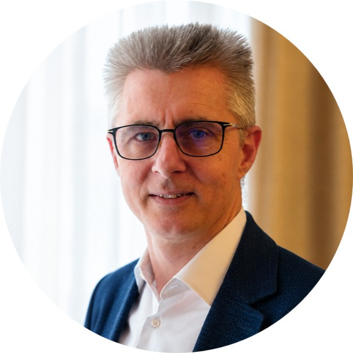
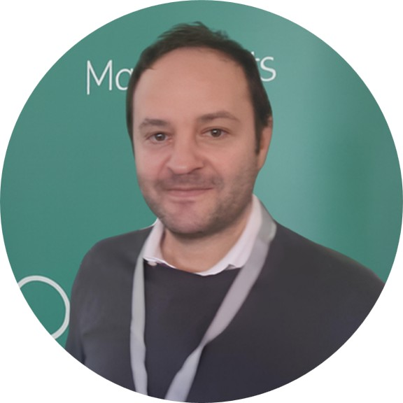
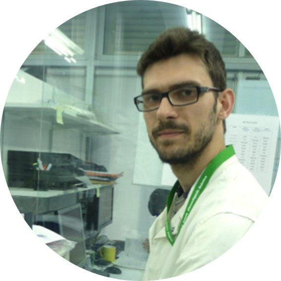
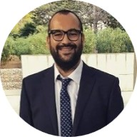
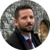

PRINCIPAL INVESTIGATOR
Prof. Paolo Fornasiero
Full Professor of Inorganic Chemistry at the University of Trieste and Principal Investigator of the PESCHE-FU project.
Research interests include heterogeneous catalysis, nanomaterials, photo- and electrocatalysis, sustainable chemistry and energy conversion.
RESEARCH TEAM
Researchers and Collaborators

Prof. Michele Melchionna
Associate Professor
His research focuses on advanced nanostructured materials and catalysts for sustainable energy and environmental applications.

Prof. Federico Franco
Associate Professor
His work focuses on electrochemistry and (photo)electrocatalysis for sustainable energy conversion, combining catalyst design and advanced spectroscopy for processes like CO₂ reduction, water splitting, and ammonia synthesis.

Dr. Giacomo Filippini
Assistant Professor
His research focuses on the design of catalytic organic transformations to address challenges in synthetic chemistry.

Dr. Luca Schio
Assistant Professor (RTT)
Researcher in surface science with nearly ten years of experience at synchrotron facilities, working at the intersection of advanced spectroscopy, molecular physics and materials science.